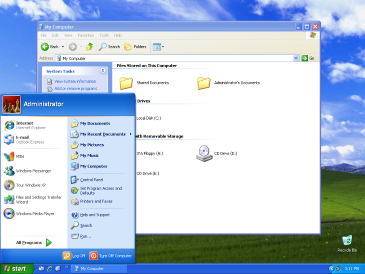
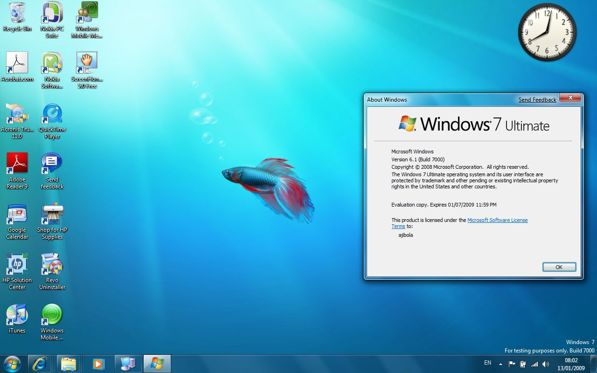

Brief Information:
Microsoft Windows is a group of graphical operating system families developed and marketed by Microsoft. It overshadows the personal computer (PC) market with over 75% market share (Microsoft, 2023).
Origin:
Windows was first introduced in 1985 as a graphical operating system shell for MS-DOS. Windows 95 (released in 1995 as seen in the name) was a first of many that brought the Start menu and taskbar we know it today (Takahashi, 2015).
Latest Version:
Windows 11 (released in 2021) is the current major release, featuring a centered Start menu, rounded corners, and improved multitasking capabilities (Warren, 2021).
Windows 1.0 (1985)
The first version of Windows provided a graphical interface on top of MS-DOS.

Windows 95 (1995)
Introduced the Start menu and taskbar we know today.

Windows XP (2001)
One of Microsoft's most popular and longest-running OS versions.

Windows 7 (2009)
Had improved performance and introduced Aero visual effects.

Windows 10 (2015)
This version introduced Cortana and the Edge browser.

Windows 11 (2021)
This is the most current version with centered start menu and rounded corners.

References:
- Microsoft (2023) Windows homepage. Available at: https://www.microsoft.com/en-us/windows
- Takahashi, D. (2015) 'The inside story of how Windows was born', VentureBeat, 24 November. Available at: https://venturebeat.com
- Warren, T. (2021) 'Windows 11 review', The Verge, 5 October. Available at: https://www.theverge.com< /li>